Home / Past papers / MLP End Term / this paper
Machine Learning Practice - Bs In Data Science/ Electronic Systems 13 Sep 26 (Session 2) - 13 Sep 2026
Elapsed 00:00
Analyze the following code block:
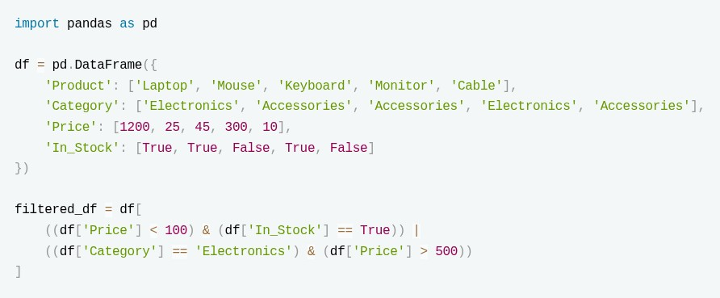
Which products are included in filtered_df?- Laptop, Mouse, Monitor
- Mouse, Keyboard
- Laptop, Mouse
- Laptop, Mouse, Cable
In the following question an Assertion (A) is followed by a Reason (R). Choose the correct option. Assertion (A): In a scikit-learn  , the last step must be a transformer that implements both
, the last step must be a transformer that implements both  and
and  . Reason (R): Only the intermediate steps of a are required to implement ; the final estimator only needs to implement .
. Reason (R): Only the intermediate steps of a are required to implement ; the final estimator only needs to implement .
, the last step must be a transformer that implements both and . Reason (R): Only the intermediate steps of a are required to implement ; the final estimator only needs to implement .- Both A and R are true, and R is the correct explanation of A
- Both A and R are true, but R is not the correct explanation of A
- A is true, but R is false
- A is false, but R is true
- Both A and R are false
Consider the following code:
 After the model is fit
After the model is fit  raises an error. Why?
raises an error. Why?
After the model is fit raises an error. Why?- VotingRegressor deletes the original estimator.
- VotingRegressor internally clones every estimator before fitting.
- LinearRegression does not store coefficients.
- VotingRegressor converts all models to RandomForest since it is the best model out of the 3 due to ensemble learning.
A news article dataset contains 10,000 documents. The word "government" appears in 9,500 documents, while the word "cryptocurrency" appears in only 200 documents. A TF-IDF vectorizer is applied to this dataset. Which of the following statements is most likely true?
- The TF value of "government" will always be lower than the TF value of "cryptocurrency" because it appears in more documents.
- The IDF contribution of "cryptocurrency" will be higher than that of "government", even if both words occur the same number of times in a document.
- If "government" appears 50 times in one article, its TF-IDF score must be higher than "cryptocurrency" appearing once in the same article.
- Removing "government" from the vocabulary will always decrease model performance because it appears in most documents.
What is being done to the input image in the given code?
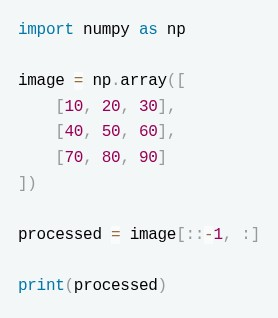
- The image has been rotated by 90 degrees clockwise.
- The image has been vertically flipped.
- The image has been horizontally flipped.
- The image has been mean centered.
A matrix-factorization recommender is set up on MovieLens-100k as follows:
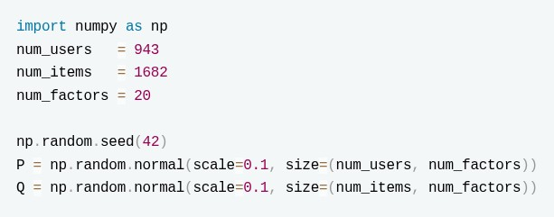
Which of the following statements is TRUE?- Evaluating the expression
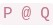
returns the full predicted-rating matrix, of shape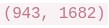
. - The model has
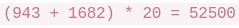
trainable parameters. - Increasing
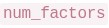
reduces the risk of overfitting on the sparse rating matrix. - The predicted rating of user
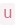
for item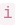
is the cosine similarity between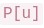
and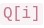
.
Which statement correctly pairs each test's null hypothesis with its decision rule?
- ADF: H0 = non-stationary, conclude stationary if p < 0.05. KPSS: H0 = (trend) stationary, conclude non-stationary if p < 0.05.
- ADF: H0 = stationary, conclude non-stationary if p < 0.05. KPSS: H0 = non- stationary, conclude stationary if p < 0.05.
- Both ADF and KPSS have H0 = non-stationary; both conclude stationary when p < 0.05.
- Both ADF and KPSS have H0 = stationary; both conclude non-stationary when p < 0.05.
What is the output of the given code?
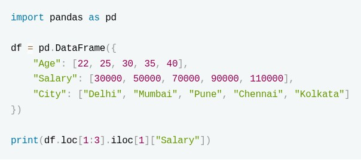
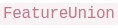
applies both transformers in parallel and concatenates their outputs side-by-side. How many columns does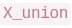
have? (Enter an integer)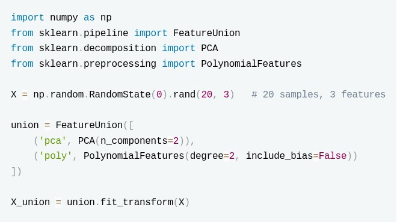
What is the output of the following code? import pandas as pd from sklearn.preprocessing import OneHotEncoder df = pd.DataFrame({ "Color": ["Red", "Blue", "Green", "Blue", "Red"], "Size": ["S", "M", "L", "XL", "M"] }) encoder = OneHotEncoder(drop="first", sparse_output=False) X = encoder.fit_transform(df) print(X.shape[1])
What is the output of the given code? (Round upto one decimal)
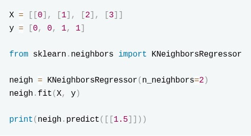
A K-Means algorithm has a cluster centroid: C=(6,6) During the next iteration, a new data point: (10,10) is assigned to this cluster. Before the update step, this cluster contained 4 data points. The individual points are not available, but the centroid of the cluster before adding the new point was: (6,6) After adding the new point and performing the centroid update step, the new centroid becomes: (6.8,6.8) What is the sum of the coordinates of the original 4 data points combined?
After scaling, what is the SUM of the transformed values of all samples whose ORIGINAL value equals 4? (Enter up to 2 decimals)
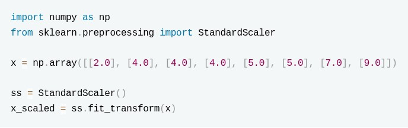
A regression model achieves an R2 score of 0.92 on a test set. The sum of squared deviations of the true target values from their mean is 625. Compute the sum of squared prediction errors made by the model.
What is the output of the print statement in the given code? Enter an integer
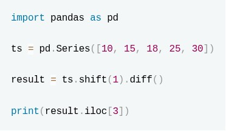
The following categorical-encoding transformers are available in scikit-learn:
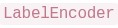
,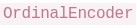
,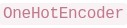
,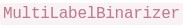
. Select ALL statements that are correct.- can transform only 1-D data, whereas can operate on multi-dimensional (multi-feature) data.
- By default (with no dropping), creates K binary columns for a feature with K distinct categories.
- is designed to encode samples where each sample is associated with a set of labels.
- is preferred over for nominal (unordered) categories because it prevents the model from assuming any ordering among the categories.
Consider the following code:
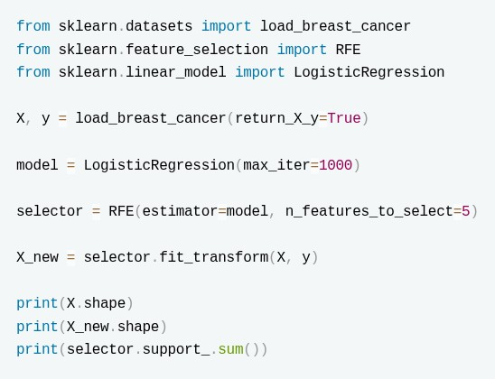
Which of the following are correct?- X_new contains exactly 5 features.
- selector.support_.sum() is equal to 5.
- RFE selects the first 5 columns of X.
- RFE repeatedly removes the least important features according to the estimator.
In the given code snippet certain lines are marked with comments. Identify which of those lines dont have any errors.
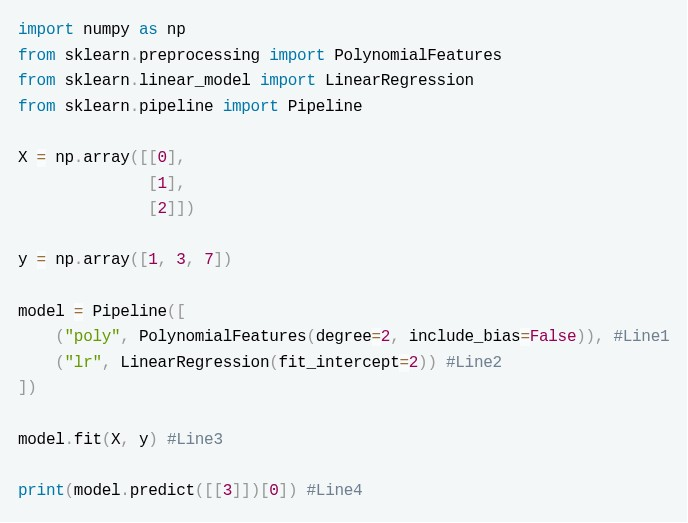
- Line1
- Line2
- Line3
- Line4
Which of the following parameters of a DecisionTreeClassifier in Sklearn can be adjusted if the model has a high varience?
- ccp_alpha
- random_state
- min_samples_split
- max_depth
Which of the following statements comparing STL decomposition with classical  are correct?
are correct?
are correct?- STL can adapt to a seasonal pattern whose shape changes slowly over time, whereas classical decomposition assumes a fixed seasonal component.
- STL, being based on LOESS smoothing, is more robust to outliers than classical decomposition.
- Classical decomposition supports only additive models, while STL supports both additive and multiplicative models.
- Classical can be run in either additive or multiplicative mode.
Consider two regularization models, Model A (Ridge) and Model B (Lasso), trained on a dataset where two input features are highly collinear ( X1≈X2 ).
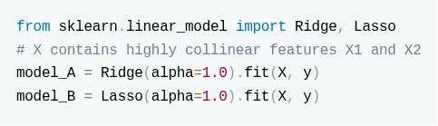
Which of the following statements accurately describe the expected behavior of these models and their evaluation metrics under severe collinearity?- Model B (Lasso) will distribute the regression coefficients evenly across both X1 and X2 to balance the penalty, while Model A (Ridge) will force one of the coefficients to be exactly zero.
- Model A (Ridge) will shrink the coefficients of X1 and X2 toward zero but keep them roughly equal, whereas Model B (Lasso) will unstablely select one feature to keep and drive the coefficient of the other exactly to zero.
- If the target variable y contains extreme outliers, evaluating these models using Mean Squared Error (MSE) will penalize those large errors more heavily than Mean Absolute Error (MAE).
- Minimizing the MSE loss function during the training of Model A and Model B mathematically guarantees that the sum of the residual errors ( y−ŷ ) will always equal zero.
Consider the following code:
 Select the correct statements:
Select the correct statements:
Select the correct statements:- The algorithm starts by selecting two random centroids and iteratively updates them.
- The algorithm initially treats every point as a separate cluster and repeatedly merges clusters based on the complete linkage criterion.
- The final labels represent the two groups formed after cutting the dendrogram to obtain two clusters.
- Changing n_clusters=2 to n_clusters=3 will change the entire merging process from the first step.
- The output labels will always be [0,0,0,1,1] because the first three points are closer to each other.
Consider the following models:
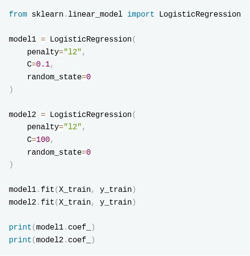
Which of the following explains the two models correctly?- model1 will apply weaker regularization compared to model2, resulting in smaller coefficients.
- model2 will apply stronger regularization compared to model1, resulting in more coefficients close to zero.
- model1 is more likely to have smaller magnitude coefficients because it uses stronger regularization.
- Both models apply the same amount of regularization because the penalty type is the same.
In the following question an Assertion (A) is followed by a Reason (R). Choose the correct option. Assertion (A): The order in which training samples are presented to the Perceptron can affect the final learned weight vector, even when the training data is linearly separable. Reason (R): If a dataset is linearly separable, the Perceptron algorithm is guaranteed to converge after a finite number of weight updates.
- Both A and R are true, and R is the correct explanation of A.
- Both A and R are true, but R is not the correct explanation of A.
- A is true, but R is false.
- A is false, but R is true.
What evaluation metric does code the compute?

- R2 Score
- Recall
- Accuracy
- Precision
- F1 Score
A hospital develops a machine learning model to identify patients who may have a rare but life-threatening disease. Only about 1% of patients actually have the disease. Every patient predicted as positive is referred for an inexpensive follow-up blood test. However, missing an actual patient with the disease could delay treatment and have severe consequences. Which evaluation metric should be given the highest priority while selecting the model?
- Accuracy
- Precision
- Recall
- F1-score
After training a KMeans clustering algorithm on a dataset we find a data point is sitting exactly on or extremely close to the decision boundary between two neighboring clusters. Which of the following values will the silhouette score be close / equal to?
- 1
- 0
- -1
- infinity
The decision rule for a Naive Bayes varient is based on the following formula:
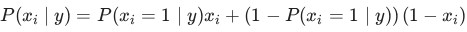
Identify the Naive Bayes varient.- GaussianNB
- BernoulliNB
- CategoricalNB
- MultinomialNB
Consider the following item–user rating matrix (rows = items, columns = users; a  means not rated):
means not rated):
 are the cosine similarities of the target item to the items the user has rated, and
are the cosine similarities of the target item to the items the user has rated, and
means not rated):
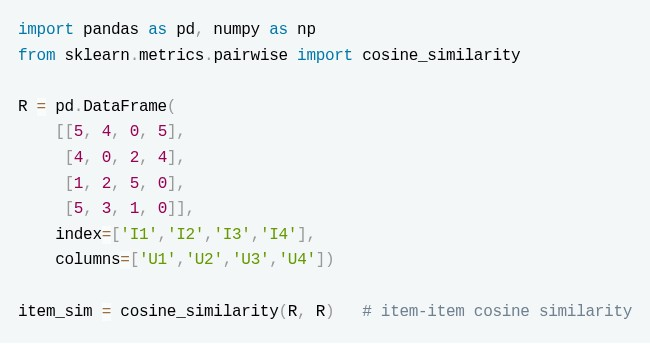
Using item–item collaborative filtering, the predicted score for an item the user has not rated is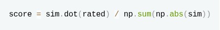
where are the cosine similarities of the target item to the items the user has rated, and 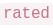
are the corresponding ratings by that user. Predict the rating that user U4 would give to item I4. (Answer up to 2 decimals.)Answer key
- Q1 (MCQ, 4 marks): C
- Q2 (MCQ, 4 marks): D
- Q3 (MCQ, 4 marks): B
- Q4 (MCQ, 4 marks): B
- Q5 (MCQ, 4 marks): B
- Q6 (MCQ, 4 marks): B
- Q7 (MCQ, 4 marks): A
- Q8 (SA, 3 marks): 70000
- Q9 (SA, 3 marks): 11
- Q10 (SA, 3 marks): 5
- Q11 (SA, 3 marks): 0.5
- Q12 (SA, 3 marks): 48
- Q13 (SA, 4 marks): -1.50
- Q14 (SA, 4 marks): 50
- Q15 (SA, 4 marks): 3
- Q16 (MSQ, 3 marks): A, B, C
- Q17 (MSQ, 3 marks): A, B, D
- Q18 (MSQ, 3 marks): A, C, D
- Q19 (MSQ, 3 marks): A, C, D
- Q20 (MSQ, 3 marks): A, B, D
- Q21 (MSQ, 4 marks): B, C
- Q22 (MSQ, 4 marks): B, C
- Q23 (MCQ, 3 marks): C
- Q24 (MCQ, 3 marks): B
- Q25 (MCQ, 3 marks): D
- Q26 (MCQ, 3 marks): C
- Q27 (MCQ, 3 marks): B
- Q28 (MCQ, 2 marks): B
- Q29 (SA, 5 marks): 4.50 to 4.65